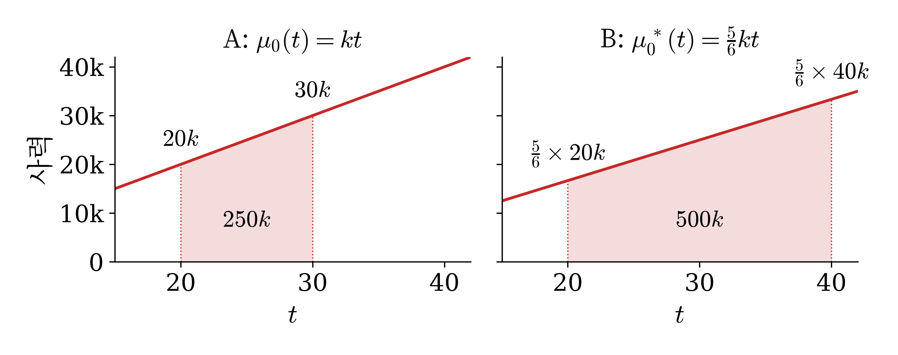
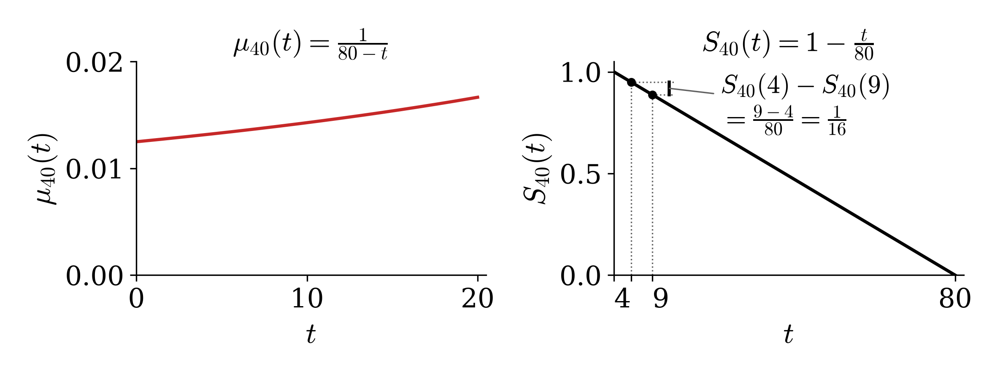
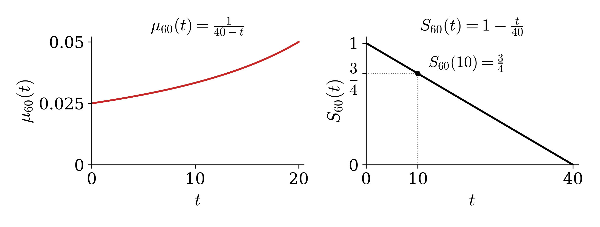

11wk-1: 계리사 기출문제 풀이 (2)
1. 강의영상
2. 사력 개념복습
- 사력: 죽을기세
- 사력의 성질: (몇 살부터 지켜봤는지와 상관없이) 지금 몇 살인지로만 정해진다.
\[\mu_x(t) = \mu_0(x+t)\]
- \(x\) 세인 사람의 \(t\) 년 뒤 사력은 갓난아기의 \(x+t\) 세 사력과 같다. 예를 들어 \(\mu_{70}(2.3) = \mu_0(72.3)\) 이다.
(이유)사력의 정의 \(\mu_x(t) = \lim_{h \to 0+} \frac{1}{h}\Pr(T_x \le t+h \mid T_x > t)\) 에\(S_x(t) = \dfrac{S_0(x+t)}{S_0(x)}\) 를 넣는다.
\[ \begin{aligned} \Pr(T_x \le t+h \mid T_x > t) &= \frac{S_x(t) - S_x(t+h)}{S_x(t)} \qquad \left(\because \Pr(t < T_x \le t+h) = S_x(t) - S_x(t+h)\right) \\ &= \frac{S_0(x+t) - S_0(x+t+h)}{S_0(x+t)} \qquad \left(\text{분자와 분모에 같이 있던 } S_0(x) \text{ 가 지워진다}\right) \\ &= \Pr(T_0 \le x+t+h \mid T_0 > x+t) \end{aligned} \]
- 유용한 그래프: 그래프를 기억하자.

- 잠설1:
- 잡설2: 아주 짧은 시간 \([t,t+h)\)에서 죽을 확률이 모두 같다는 것은 결국 생존시간이 지수분포가 된다는 의미이다. (포아송프로세스로 이항분포를 지수근사로 하는 테크닉) case2는 그걸 설명함
3. 기출문제풀이
# 예제 1 (2024 1차 29번) 아래의 조건을 이용하여 나이가 40세인 흡연자가 금연하지 않을 경우 20년 이내에 사망할 확률을 구하시오.
(가) 비흡연자인 경우 \(S^{\text{비흡연}}_x(t) = \left(1 - \dfrac{t}{100-x}\right)^2\), \(0 \le t \le 100-x\)
(나) 모든 나이에서 흡연자의 사력은 비흡연자의 2배임: \(\mu_x^{\text{흡연}}(t) = 2\mu_x^{\text{비흡연}}(t)\)
① 0.5 ② 0.6 ③ 0.7 ④ 0.8
(예비학습)
아래의 사실을 체크하자.
- \(e^{-2x} = (e^{-x})^2\)
- 모든 나이에서 사력이 2배 \(\Rightarrow\) 넓이가 2배 \(\Rightarrow\) 생존함수는 제곱
(풀이)
\[ \begin{aligned} &(\text{40세인 흡연자가 20년 내에 사망할 확률}) \\ &\quad = 1 - (\text{40세인 흡연자가 20년 넘어서 생존할 확률}) \\ &\quad = 1 - S^{\text{흡연}}_{40}(20) \\ &\quad = 1 - \left\{S^{\text{비흡연}}_{40}(20)\right\}^2 \\ &\quad = 1 - \left\{\left(1 - \frac{20}{60}\right)^2\right\}^2 = 1 - \left(\frac23\right)^4 = \frac{65}{81} = 0.8024691\cdots \approx 0.80 \end{aligned} \]
(예비학습 없는 풀이)
\[ \begin{aligned} F^{\text{흡연}}_{40}(20) &= 1 - S^{\text{흡연}}_{40}(20) \\ &= 1 - \exp\left\{-\int_0^{20} \mu_{40}^{\text{흡연}}(t)\,dt\right\} \\ &= 1 - \exp\left\{-2\int_0^{20} \mu_{40}^{\text{비흡연}}(t)\,dt\right\} \\ &= 1 - \left[\exp\left\{-\int_0^{20} \mu_{40}^{\text{비흡연}}(t)\,dt\right\}\right]^2 \qquad (e^{-2a} = (e^{-a})^2) \\ &= 1 - \left\{S^{\text{비흡연}}_{40}(20)\right\}^2 = 1 - \left(\frac23\right)^4 = \frac{65}{81} = 0.8024691\cdots \approx 0.80 \end{aligned} \]
답: ④ 0.8
아래의 조건을 이용하여 나이가 40세인 흡연자가 금연하지 않을 경우 20년 이내에 사망할 확률을 구하시오.
(가) 비흡연자인 경우 \({}_tp_x = \left(1 - \dfrac{t}{100-x}\right)^2,\ 0 \le t \le 100-x\)
(나) 모든 나이에서 흡연자의 사력은 비흡연자의 2배임.
① 0.5 ② 0.6 ③ 0.7 ④ 0.8
시험지의 기호
| 시험지 | 뜻 | 우리 기호 |
|---|---|---|
| \({}_tp_x\) | \(x\) 세인 사람이 \(t\) 년 뒤에도 살아 있을 확률. 이 문항에서는 비흡연자의 것이다 | \(S^{\text{비흡연}}_x(t)\) |
#
# 예제 2 (2026 1차 26번) 아래의 조건을 이용하여 70세의 철수가 1년 안에 사망할 확률을 구하시오.
(가) 영수의 사력은 \(\mu_0^{\text{영수}}(t)\), \(F^{\text{영수}}_{70}(1) = 0.01\)
(나) 철수의 사력은 \(\mu_0^{\text{철수}}(t) = 0.5\,\mu_0^{\text{영수}}(t) + 0.01\)
(다) \(e^{-0.01} = 0.99\)
① 0.0117 ② 0.0124 ③ 0.0132 ④ 0.0149
(풀이) 구하는 확률은 철수의 \(F^{\text{철수}}_{70}(1) = 1 - S^{\text{철수}}_{70}(1)\) 이다. 따라서 \(S^{\text{철수}}_{70}(1)\) 을 구한다. (가) 에서 \(S^{\text{영수}}_{70}(1) = 1 - F^{\text{영수}}_{70}(1) = 0.99\) 이고, (나) 는 모든 나이에서 성립하므로 \(\mu_{70}^{\text{철수}}(t) = 0.5\,\mu_{70}^{\text{영수}}(t) + 0.01\) 이다.
\[ \begin{aligned} S^{\text{철수}}_{70}(1) &= \exp\left\{-\int_0^1 \mu_{70}^{\text{철수}}(t)\,dt\right\} \\ &= \exp\left\{-\int_0^1 \left(0.5\,\mu_{70}^{\text{영수}}(t) + 0.01\right) dt\right\} \\ &= \exp\left\{-0.5\int_0^1 \mu_{70}^{\text{영수}}(t)\,dt\right\} e^{-0.01} \\ &= \left[\exp\left\{-\int_0^1 \mu_{70}^{\text{영수}}(t)\,dt\right\}\right]^{0.5} e^{-0.01} \\ &= \left\{S^{\text{영수}}_{70}(1)\right\}^{0.5} e^{-0.01} = \sqrt{0.99} \times 0.99 = 0.9850375\cdots \end{aligned} \]
구하는 확률은 \(1 - 0.9850375\cdots = 0.0149624\cdots\) 이고 보기에서 가장 가까운 것은 0.0149 다.
답: ④ 0.0149
아래의 조건을 이용하여 70세의 철수가 1년 안에 사망할 확률을 구하시오.
(가) 영수의 사력은 \(\mu_x\), \(q_{70} = 0.01\)
(나) 철수의 사력은 \(\mu_x'\), \(\mu_x' = 0.5\mu_x + 0.01\)
(다) \(e^{-0.01} = 0.99\)
① 0.0117 ② 0.0124 ③ 0.0132 ④ 0.0149
시험지의 기호
| 시험지 | 뜻 | 우리 기호 |
|---|---|---|
| \(p_x\) · \(q_x\) | 기간이 1년이면 왼쪽 아래첨자를 뗀다. \(p_x = {}_1p_x\), \(q_x = {}_1q_x\). 이 문항에서는 영수의 것이다 | \(S^{\text{영수}}_x(1)\) · \(F^{\text{영수}}_x(1)\) |
| \(\mu_x\) | \(x\) 세의 사력(force of mortality). \(\mu_x = \lim_{h \to 0+} \dfrac{1}{h}\Pr(T_0 \le x+h \mid T_0 > x)\). 이 문항에서는 영수의 것이고 \(x\) 는 우리의 \(t\) 다 | \(\mu_0^{\text{영수}}(t)\) |
| \(\mu_x'\) | 철수의 사력. 프라임은 미분이 아니라 철수 몫이라는 표시다 | \(\mu_0^{\text{철수}}(t)\) |
#
# 예제 3 (2021 1차 30번) 2021년 COVID-19가 유행 중인 상황에서 피보험자의 사력은 \(\mu_0(t) = kt\) 이고, 나이가 20세인 피보험자 A가 10년 내에 사망할 확률은 0.1이다. 2022년에 유행이 종료한 후 사력이 \(\mu_0^*(t) = \dfrac56 kt\) 로 감소한다고 할 때, 2022년에 나이가 20세인 피보험자 B가 20년 내에 사망할 확률을 구하시오. (단, \(k\) 는 상수)
① 0.14 ② 0.19 ③ 0.25 ④ 0.33
(풀이) 구하는 확률은 B 의 \(F^{\text{B}}_{20}(20) = 1 - S^{\text{B}}_{20}(20)\) 이다. 따라서 \(S^{\text{B}}_{20}(20)\) 을 구한다. B 의 사력은 \(\mu_0^{\text{B}}(t) = \mu_0^*(t) = \dfrac56 kt\) 이므로 20세부터 재면 \(\mu_{20}^{\text{B}}(t) = \mu_0^{\text{B}}(20+t) = \dfrac56 k(20+t)\) 다.
\[ \begin{aligned} S^{\text{B}}_{20}(20) &= \exp\left\{-\int_0^{20} \mu_{20}^{\text{B}}(t)\,dt\right\} \\ &= \exp\left\{-\int_0^{20} \frac56 k(20+t)\,dt\right\} = e^{-500k} \end{aligned} \]
\(k\) 는 A 에서 나온다. A 의 사력은 \(\mu_0^{\text{A}}(t) = \mu_0(t) = kt\) 이므로 20세부터 재면 \(\mu_{20}^{\text{A}}(t) = \mu_0^{\text{A}}(20+t) = k(20+t)\) 다.
\[ \begin{aligned} S^{\text{A}}_{20}(10) &= \exp\left\{-\int_0^{10} \mu_{20}^{\text{A}}(t)\,dt\right\} \\ &= \exp\left\{-\int_0^{10} k(20+t)\,dt\right\} = e^{-250k} = 0.9 \end{aligned} \]
따라서 \(S^{\text{B}}_{20}(20) = e^{-500k} = (e^{-250k})^2 = 0.9^2 = 0.81\) 이고, 구하는 확률은 \(1 - 0.81 = 0.19\).
(넓이 풀이) 구하는 확률은 B 의 \(F^{\text{B}}_{20}(20) = 1 - S^{\text{B}}_{20}(20)\) 이다. 따라서 \(S^{\text{B}}_{20}(20)\) 을 구한다. 사력이 직선이라 넓이는 사다리꼴이다.

B 는 사력이 \(\dfrac56\) 배이고 20세부터 40세까지다.
\[(\mu_0^{\text{B}}(t) \text{ 의 } 20 \sim 40 \text{ 의 넓이}) = \frac56 \times \frac{20k + 40k}{2} \times 20 = 500k, \qquad S^{\text{B}}_{20}(20) = e^{-500k}\]
\(k\) 는 A 에서 나온다. A 는 20세부터 30세까지다.
\[(\mu_0^{\text{A}}(t) \text{ 의 } 20 \sim 30 \text{ 의 넓이}) = \frac{20k + 30k}{2} \times 10 = 250k, \qquad S^{\text{A}}_{20}(10) = e^{-250k} = 0.9\]
따라서 \(S^{\text{B}}_{20}(20) = e^{-500k} = (e^{-250k})^2 = 0.9^2 = 0.81\) 이고, 구하는 확률은 \(1 - 0.81 = 0.19\).
답: ② 0.19
2021년 COVID-19가 유행 중인 상황에서 피보험자 \((x)\)의 사력은 \(\mu_x = kx\)이고, 나이가 20세인 피보험자 A가 10년 내에 사망할 확률은 0.1이다. 2022년에 유행이 종료한 후 사력이 \(\mu^*_x = \frac{5}{6}kx\)로 감소한다고 할 때, 2022년에 나이가 20세인 피보험자 B가 20년 내에 사망할 확률을 구하시오. (단, \(k\)는 상수)
① 0.14 ② 0.19 ③ 0.25 ④ 0.33
시험지의 기호
| 시험지 | 뜻 | 우리 기호 |
|---|---|---|
| \(\mu_x\) | \(x\) 세의 사력(force of mortality). \(\mu_x = \lim_{h \to 0+} \dfrac{1}{h}\Pr(T_0 \le x+h \mid T_0 > x)\). 이 문항의 \(x\) 는 우리의 \(t\) 다 | \(\mu_0(t)\) |
| \(\mu_x^*\) | 유행이 끝난 뒤의 사력. 별표는 바뀐 사력이라는 표시다 | \(\mu_0^*(t)\) |
#
# 예제 4 (2023 1차 36번) 사력 \(\mu_0(t) = \dfrac{1}{120-t}\), \(0 < t < 120\) 일 때, \(S_{40}(4) - S_{40}(9)\) 를 구하시오.
① \(\dfrac{1}{15}\) ② \(\dfrac{1}{16}\) ③ \(\dfrac{1}{17}\) ④ \(\dfrac{1}{18}\)
(풀이) 사력을 넣으면 생존함수가 나온다.
\[ \begin{aligned} S_0(t) &= \exp\left\{-\int_0^t \mu_0(s)\,ds\right\} \\ &= \exp\left\{-\int_0^t \frac{ds}{120-s}\right\} = \exp\{\log(120-t) - \log 120\} = \frac{120-t}{120} \end{aligned} \]
따라서 \(S_{40}(t) = \dfrac{S_0(40+t)}{S_0(40)} = \dfrac{80-t}{80}\) 이다. \(S_{40}(4) - S_{40}(9) = \dfrac{76 - 71}{80} = \dfrac{1}{16}\).
(case2 풀이) 곡선이라 \(\mu_{40}(t)\) 의 \(0 \sim 4\), \(0 \sim 9\) 의 넓이가 바로 안 나온다. 대신 \(\mu_{40}(t) = \mu_0(40 + t) = \dfrac{1}{80 - t}\) 가 위 표의 \(\dfrac{1}{a - t}\) 꼴이다. 곧 \(a = 80\) 인 case2 이므로 \(S_{40}(t) = 1 - \dfrac{t}{80}\) 이다. \(S_{40}(4) - S_{40}(9) = \dfrac{9 - 4}{80} = \dfrac{1}{16}\).

(균등분포 풀이) case2 이므로 \(T_{40}\) 은 \((0, 80)\) 의 균등분포다. \(S_{40}(4) - S_{40}(9) = \Pr(4 < T_{40} \le 9)\) 는 구간 길이의 비이므로 \(\dfrac{9 - 4}{80} = \dfrac{1}{16}\).
답: ② \(\dfrac{1}{16}\)
사력 \(\mu_x = \frac{1}{120-x}\), \(0 < x < 120\) 일 때, \({}_{4\vert 5}q_{40}\) 을 구하시오.
① \(\frac{1}{15}\) ② \(\frac{1}{16}\) ③ \(\frac{1}{17}\) ④ \(\frac{1}{18}\)
시험지의 기호
| 시험지 | 뜻 | 우리 기호 |
|---|---|---|
| \({}_{u\vert t}q_x\) | \(x\) 세인 사람이 \(u\) 년은 살고 그다음 \(t\) 년 안에 죽을 확률. \(t = 1\) 이면 \({}_{u\vert}q_x\) 로 쓴다 | \(S_x(u) - S_x(u+t) = \Pr(u < T_x \le u+t)\) |
| \(\mu_x\) | \(x\) 세의 사력(force of mortality). \(\mu_x = \lim_{h \to 0+} \dfrac{1}{h}\Pr(T_0 \le x+h \mid T_0 > x)\). 이 문항의 \(x\) 는 우리의 \(t\) 다 | \(\mu_0(t)\) |
#
# 예제 5 (2019 1차 30번) 피보험자에 대하여 사력이 다음과 같다.
\[\mu_0(t) = \dfrac{1}{100-t}, \quad 0 \le t < 100\]
피보험자 \((60)\) 의 장래생존기간이 \(T_{60}\) 일 때, \(\Pr(T_{60} > t) = \dfrac34\) 인 \(t\) 값을 구하시오.
① 10 ② 15 ③ 20 ④ 30
(풀이) 사력을 넣으면 생존함수가 나온다.
\[ \begin{aligned} S_0(t) &= \exp\left\{-\int_0^t \mu_0(s)\,ds\right\} \\ &= \exp\left\{-\int_0^t \frac{ds}{100-s}\right\} = \exp\{\log(100-t) - \log 100\} = 1 - \frac{t}{100} \end{aligned} \]
따라서 \(S_{60}(t) = \dfrac{S_0(60+t)}{S_0(60)} = \dfrac{40-t}{40}\) 다. \(\dfrac{40-t}{40} = \dfrac34\) 에서 \(t = 10\).
(case2 풀이) 곡선이라 \(\mu_{60}(t)\) 의 넓이가 바로 안 나온다. 대신 \(\mu_{60}(t) = \mu_0(60 + t) = \dfrac{1}{40 - t}\) 가 위 표의 \(\dfrac{1}{a - t}\) 꼴이다. 곧 \(a = 40\) 인 case2 이므로 \(S_{60}(t) = 1 - \dfrac{t}{40}\) 이다. \(1 - \dfrac{t}{40} = \dfrac34\) 에서 \(t = 10\).

(균등분포 풀이) case2 이므로 \(T_{60}\) 은 \((0, 40)\) 의 균등분포다. \(\Pr(T_{60} > t) = \dfrac34\) 이면 \(t\) 는 이 구간의 왼쪽에서 \(\dfrac14\) 되는 자리다. 따라서 \(t = 40 \times \dfrac14 = 10\).
답: ① 10
피보험자 \((x)\)에 대하여 사력이 다음과 같다. \(\mu_x = \frac{1}{100-x}\), \(0 \le x < 100\). 피보험자 (60)의 완전미래생존기간(complete future lifetime) 확률변수가 \(T_{60}\)일 때, \(\Pr(T_{60} > t) = \frac34\)인 \(t\)값을 구하시오.
① 10 ② 15 ③ 20 ④ 30
시험지의 기호
| 시험지 | 뜻 | 우리 기호 |
|---|---|---|
| \(\mu_x\) | \(x\) 세의 사력(force of mortality). \(\mu_x = \lim_{h \to 0+} \dfrac{1}{h}\Pr(T_0 \le x+h \mid T_0 > x)\). 이 문항의 \(x\) 는 우리의 \(t\) 다 | \(\mu_0(t)\) |
#
# 예제 6 (2023 1차 30번) 사력 \(\mu_0(t) = \dfrac{1}{3+t}\), \(t \ge 0\) 일 때 \(S_0(4)\) 를 구하시오.
① \(\dfrac17\) ② \(\dfrac29\) ③ \(\dfrac37\) ④ \(\dfrac49\)
(풀이) 사력을 넣으면 생존함수가 나온다.
\[ \begin{aligned} S_0(4) &= \exp\left\{-\int_0^4 \mu_0(t)\,dt\right\} \\ &= \exp\left\{-\int_0^4 \frac{dt}{3+t}\right\} = \exp\left\{-\log\frac{7}{3}\right\} = \frac{3}{7} \end{aligned} \]
답: ③ \(\dfrac37\)
사력 \(\mu_x = \frac{1}{3+x}\), \(x \ge 0\) 일 때 \({}_4p_0\) 를 구하시오.
① \(\frac17\) ② \(\frac29\) ③ \(\frac37\) ④ \(\frac49\)
시험지의 기호
| 시험지 | 뜻 | 우리 기호 |
|---|---|---|
| \({}_tp_x\) | \(x\) 세인 사람이 \(t\) 년 뒤에도 살아 있을 확률 | \(S_x(t) = \Pr(T_x > t)\) |
| \(\mu_x\) | \(x\) 세의 사력(force of mortality). \(\mu_x = \lim_{h \to 0+} \dfrac{1}{h}\Pr(T_0 \le x+h \mid T_0 > x)\). 이 문항의 \(x\) 는 우리의 \(t\) 다 | \(\mu_0(t)\) |
#
# 예제 7 (2018 1차 26번) 다음 중 \(\dfrac{d}{dx}S_x(t)\) 와 같은 것을 고르시오.
① \(S_x(t)\,(\mu_x(0) - \mu_x(t))\)
② \(-S_x(t)\,(\mu_x(0) - \mu_x(t))\)
③ \(S_x(t)\,\mu_x(t)\)
④ \(-S_x(t)\,\mu_x(t)\)
(풀이)
\[ \begin{aligned} &\frac{d}{dx}S_x(t) = \frac{d}{dx}\frac{S_0(x+t)}{S_0(x)} \quad \left(\because S_x(t) = \frac{S_0(x+t)}{S_0(x)}\right) \\ &\quad = \frac{S_0'(x+t)\,S_0(x) - S_0(x+t)\,S_0'(x)}{S_0(x)^2} \quad (\because \text{몫의 미분}) \\ &\quad = \frac{S_0(x+t)}{S_0(x)}\left\{\frac{S_0'(x+t)}{S_0(x+t)} - \frac{S_0'(x)}{S_0(x)}\right\} \quad (\because \text{공통인수로 묶는다}) \\ &\quad = S_x(t)\,\{-\mu_x(t) + \mu_x(0)\} \quad \left(\because \mu_x(t) = -\frac{S_x'(t)}{S_x(t)} = -\frac{S_0'(x+t)}{S_0(x+t)}\right) \\ &\quad = S_x(t)\,(\mu_x(0) - \mu_x(t)) \end{aligned} \]
답: ①
다음 중 \(\frac{d}{dx}\,{}_tp_x\)와 같은 것을 고르시오.
① \({}_tp_x\,(\mu_x - \mu_{x+t})\)
② \(-{}_tp_x\,(\mu_x - \mu_{x+t})\)
③ \({}_tp_x\,\mu_{x+t}\)
④ \(-{}_tp_x\,\mu_{x+t}\)
시험지의 기호
| 시험지 | 뜻 | 우리 기호 |
|---|---|---|
| \({}_tp_x\) | \(x\) 세인 사람이 \(t\) 년 뒤에도 살아 있을 확률 | \(S_x(t) = \Pr(T_x > t)\) |
| \(\mu_x\) | \(x\) 세의 사력(force of mortality). \(\mu_x = \lim_{h \to 0+} \dfrac{1}{h}\Pr(T_0 \le x+h \mid T_0 > x)\) | \(\mu_x(0)\) |
| \(\mu_{x+t}\) | \(x+t\) 세의 사력. 시험지는 사력을 나이 하나로 적는다 | \(\mu_x(t)\) |
#